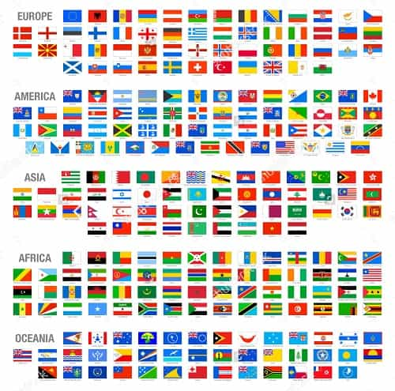
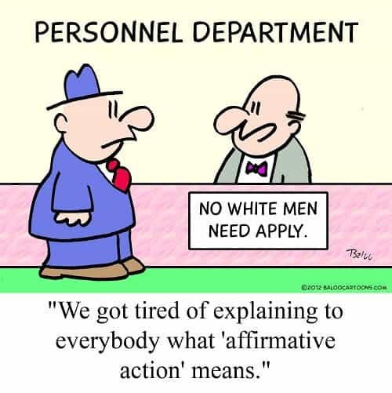

is an aspiring philosopher king, living the dream, travelling the world, hoarding FRNs and ignoring Americunts. He is a European at heart, lover of Latinas, and currently residing in the USA.


In late June, the U.S. Supreme Court issued a 4 to 3 decision confirming that race should be a factor in deciding which students should be admitted to university. This was a somewhat surprise decision, with most pundits predicting that race-based admissions would be seen as clearly illegal.
U of Texas President Gregory Fenves, “thrilled and gratified” by the ruling
The Justices were separated along ideological lines. After David Souter left, the court has no reasonable members; all are ideologues from one side or the other. Justice Kennedy is perhaps the most reasonable centrist remaining. Justice Antonin Scalia recently died, and the US legislature has refused to allow a vote on Obama’s choice to replace him. Additionally, Justice Elena Kagan, an Obama appointee, recused herself because of a conflict of interest (she advocated for race-based admissions when she worked for the Obama administration, and kudos to her for honorably stepping aside). This left the court two votes short of its normal nine members.
In the end, Justice Kennedy was the swing vote. While he never voted to support race-based criteria in his career prior to this case, he was reluctant to completely rule out race as a factor that colleges can consider, and joined Ruth Bader Ginsburg, Stephen Breyer, and Sonia Sotomayor in approving racial discrimination by college admissions teams.
Abigail Fisher had challenged UT, who denied her admittance
I do believe there is merit to being exposed to a wide variety of ideas, backgrounds, nationalities, and points of view in college. The college years are when we typically form many opinions about the world, choose our careers, and often build lifelong friendships or marriages. I benefited from a highly ranked campus on the east coast which had students from every state in the nation, as well as many international students.
I still remember tagging along with a hot Egyptian female who invited me to a rave, in my pathetic blue pill days where I completely ignored the brilliant opportunity she provided me, and I have good memories of a Moroccan suitemate who introduced me to different music, food, and culture.
I had friends from several countries, each with varying opinions about the world, differing religions, and plans for the future. Many of the most bizarre or different students made a far more lasting impression on me than if they had just been another “Biff the Frat Boy” character on my hall. So I see the value of diversity, especially in one’s formative years.
Diversity, in fact, is what stimulates me so much about foreign travel, and in large part, forms the appeal of foreign women. It’s why men are driven to “collect flags.”

However, opening the door to racial discrimination is a dangerous thing. When colleges are allowed to racially discriminate, they are allowing factors beyond the control of the student (the color of his or her skin) to become an important factor on whether he or she is an appealing enough candidate to be accepted into a competitive school.
Essentially, this is no different than admitting only abnormally tall or abnormally short students, regardless of their scholastic performance, because then that would create a “diversity of height.”
Not all diversity is valued, only the “right” diversity.
Diversity of ideas can still be achieved through other proxies besides skin color. For example, geographic diversity is a factor already used. A certain percentage of students are typically accepted from that state’s population, with the remainder coming from other states or internationally. And with international students, schools don’t accept only white, English speaking students from, say, England, but instead spread out their international student spots among a variety of countries.
I’m thankful for the social learning I was able to do in college, thanks to being exposed to and interacting with German, Russian, Chinese, Egyptian, and Persian students. And come to think of it, their skin tones did differ considerably from mine, even though they weren’t selected on the basis of their race.
One mental exercise I practice is to turn an argument on its head, and see if it has any merit when completely reversed. Imagine this same story was being reported in the 1960s: “Supreme Court confirms race should be a factor in deciding which students are admitted to college.” The obvious implication would be that whites were trying to preserve their fully white schools, and trying to use the law to prevent any minorities from attending college.
This of course, would be completely unfair and wrong, and the law should have been rightfully stricken down as illegal and bad. So why would it be allowed today, just because the races in question are reversed? Is there something inherently bad about white people (and Asians) that we should limit their access to education? If this is merely an argument that “diversity is good” then the same law which is good today (encouraging diversity) would have been bad in the 1960s (preventing diversity), which makes no sense.
Another argument racial discriminating advocates put forth is that whites must be punished for the crimes of other people who are also white. In the past, white people owned slaves. And in the past those dark people that were owned, suffered and were unable to be economically and physically free. And therefore we must punish people who look the same as those past bad men, in order to make things right. What is ridiculous about this argument, is that it is exactly how racists in the past behaved.

Racist hateful white men who lynched an innocent black didn’t *care* that he was innocent of whatever crime they accused him of—they simply wanted him punished or killed because he looked like other black men. In other words, the innocent lynched black was judged on the color of his skin and not the content of his character. If racism is wrong, then race based affirmative action is wrong. It’s just as wrong as if German Jews were allowed to tattoo crescent moons onto the arms of Christian Germans because their ancestors did bad things to Jews.
Discrimination does not somehow become magically good because the perpetrator becomes the victim. Any basic understanding of the law teaches this. It is no more justified to steal from the town rapist than it is the town preacher. Stealing is wrong, regardless of the circumstances or the background of the person doing the stealing, or the victim.
This supreme court ruling is just another step down the path of lawlessness and racism, sewing seeds of discontent that will likely one day grow into an ugly, dangerous reprisal.
Read More: 4 Reasons Why The Collapse Will Be The Best Thing to Happen For Men